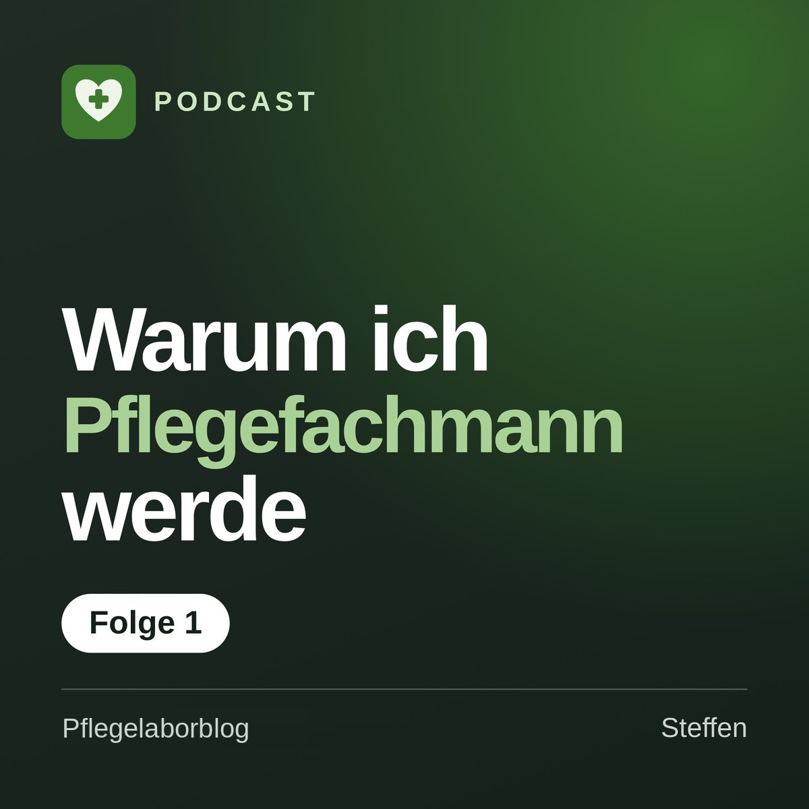

Podcast
Zum Hören
Ausgewählte Themen aus dem Blog auch zum Hören, zum Beispiel auf dem Weg zur Schule oder zum Dienst.

Folge folgt demnächstDie erste Folge ist in Vorbereitung
Sobald die erste Folge online ist, findest du sie hier. Nicht jeder Beitrag wird auch gesprochen. Wenn es zu einer Folge einen passenden Beitrag gibt, findest du beides hier und kannst lesen oder hören, wie es dir lieber ist.
Die Links zu Spotify und Apple Podcasts werden ergänzt, sobald der Podcast eingerichtet ist.